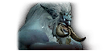
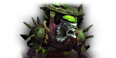

Choose a Dungeon
Mists of Tirna Scithe
Ingra Maloch
- Set 3 interrupts rotation for Spirit Bolt casts,
- Commit BL/Hero and all the offensive cooldowns for Dorman’s Wrath phase,
- Counter Repulsive Visage with shaman’s Tremor Totem.
Mistcaller
- Tank needs to interrupt Patty Cake cast,
- Avoid Dodge Ball projectile,
- Use a crowd control ability to stop Freeze Tag fox,
- Use defensive cooldowns during Guessing Game phase.
Tred'ova
- Commit BL/Hero to this boss on the pull, the longer this fight takes it gets more difficult,
- Be ready to run away with the Mind Link mechanic,
- Let the tank always take care of the Parasitic Pacification cast, and a ranged dps always interrupt the Consumption channel cast.
De Other Side
Hakkar the Soulflayer
- Use all the cooldowns when boss is at 80% hp,
- Commit BL/Hero/TW at 80%,
- If your composition is burst dps oriented, just focus on the boss,
- If your composition is sustained dps oriented, take care of Sons of Hakkar asap.
The Manastorms
- Use only 1min cooldowns at pull, and follow up with big cooldowns once Millificent joins the fight,
- Soak Power Overwhelming beams,
- Make sure you deactivate all the Expertimental Squirrel Bombs.
Dealer Xy-exa
- Commit BL/Hero/TW to this boss at pull,
- Stay spreaded a little to avoid Displacement Traps spawning on one another,
- Make sure to pass Arcane Lightning mechanic to a player who hasn’t had it right before you.

Mueh’zala
- Commit only 1minute cooldowns on the pull so they recharge for p2,
- Soulcrusher will hurt your tank, make sure you’ve got your active mitigation up for it!
- Commit all your cooldowns in order to defeat the Shattered Visage during the totem phase.
Halls of Atonement
Halkias
- Make use of two Venthyr Gargoyles to speed up the fight,
- Never stay on the tanks so you won't ever get hit by Crumbling Slam,
- Follow the pattern during Refracted Sunlight,

Echelon
- Commit BL/Hero/TW to this boss on the pull,
- Make use of druid/mage/shaman decurse ability,
- Use mobility-increasing ability right after Echelon leaps into the air to avoid big damage over time.
High-Adjudicator Aleez
- Make use of two Vennthyr Gargoyles to speed up the fight,
- Keep 3 interrupts rotation to prevent any casts,
- Lead Ghastly Parishioners into Vessels of Atonement.
Lord Chamberlain
- Commit BL/Hero to this boss on the pull,
- Avoid Telekinetic Toss mechanic,
- use defensive cooldowns while soaking Ritual of Woe,
- Tank can soak two Ritual of Woe beams at the same time, making it easier for the healer.
Plaguefall
Globgrog
- Commit BL/Hero to this boss on the pull,
- Stay close to the boss in order to dodge the Slime Wave frontal mechanic easier,
- Use long cc such as Paralyze or Turn Evil on Slimy Smorgasbord,
- If your composition is high burst dps you might defeat the boss before 3 Slimy Morsels spawn, if not, slow, cc and eliminate them before they reach the boss.
Doctor Ickus
- Dodge Slime Lunge mechanic,
- Tank needs to stay close to the boss at all times in order to prevent him from casting Burning Strain,
- Congealed Slimes have plenty of health, therefore if your composition allows it then it’s better to push them back (eg. druids Typhon, or Monks Ring of Peace) and hard cc them (eg. Paralyze, Freezing Trap, Entangling Roots). Then commit fully to the Plague Bomb before it’s Virulent Explosion goes off.
Domina Venomblade
- Commit BL/Hero/TW to this boss on the pull during Fortified weeks,
- Stay stacked with at least 1 person at all times,
- Only move out from the stack when you’re targeted with Shadow Ambush,
- Use aoe abilities to get all of the Brood Assassins from stealth.
Margrave Stradama
- Commit BL/Hero/TW to this boss during the 2nd phase during Tyrannical weeks,
- Use defensive cooldowns for Infectious Rain,
- Let the tank soak alone Malignant Spawn’s circle,
- Don’t get hit by any of the tentacles during the intermission phase,
- Stay away from the Plaguebound Devoted skeletons during the intermission.
Necrotic Wake
Blightbone
- Commit BL/Hero/TW to this boss on the pull,
- Make use of Kyrian Goliath’s- Anima Exhaust to increase your damage,
- If you’re targeted by Heaving Retch- move away from the rest of your party,
- Tanks need to use defensives for Crunch ability,
- Don’t get hit by anyof the Carrion Worms.
Amarth, the Harvester
- Commit BL/Hero/TW to this boss on the pull alongside with Kyrian Javelin,
- Soothe Unholy Frenzy off of the boss,
- Keep two people interrupt rotation for Necrotic Bolt casts,
- During Land of the Dead- CC the Reanimated Mages, and cleave the remaining ones with the boss,
- Dodge Necrotic Breath frontal ability.

Surgeon Stitchflesh
- Commit the Kyrian Javelin and all the offensive cooldowns apart from BL/Hero/TW once Stitchflesh is brought to the encounter,
- Make sure to line-up Meat Hook and Morbid Fixation in order to avoid the mechanic,
- Don’t stand in the Noxious Fog pools on the floor.
Nalthor the Rimebinder
- If you have some spare time on your timer it’s generally better to wait for your cooldowns to come back up as this boss fight gets harder the longer it lasts,
- Commit BL/Hero/TW to this boss on the pull alongside with Kyrian Javelin,
- Use all of the Kyrian Hammers to break Icebound Aegis,
- Stay spreaded to avoid Frozen Binds overlap,
- Once you come back from Dark Exile leave Razorshard Ice puddle in the corner of the room.
Sanguine Depths
Kryxis the Voracious
- Commit BL/Hero/TW to this boss on the pull,
- Interrupt Hungering Drain cast asap,
- Stack for Juggernaut Rush,
- Tank, use defensive cooldowns for Vicious Headbutt ability,
- Run away from the boss during the Severing Smash cast in order to leave an Essence further away from the boss.
Executor Tarvold
- Commit BL/Hero/Tw to this boss on the pull,
- Don’t get hit by any of the Sintouched Anima that orbits around the room,
- Burst down the Fleeting Manifestation asap,
- Stay away from the Residue on the floor.
Grand Proctor Beryllia
- Pick up at least 3 Fragments of Radiance in order to survive Rite of Supremacy,
- During the Endless Torment mechanic avoid Anguished Cries swirlies on the floor,
- Tank needs to use defensives for Iron Spikes casts.
General Kaal
- Gather under Shining Radiance in order to survive Gloom Squall,
- Don’t stack with anyone when targeted by Wicked Rush mechanic,
- Avoid Piercing Blur by standing close to the edge of one and move into that area right after it goes off.
Spires of Ascencion
Kin-Tara
- Stay away from the link between Kin-Tara and Azules,
- Tank needs to use defensive ability for Overhead Slash ability,
- When targeted with Charged Spear move close to the wall to position it well,
- Stack both the bosses as much as you can.
Ventunax
- Commit BL/Hero/TW and all the cooldowns on the pull,
- Tank- position two Shadowhirls close to each other and then move far away to have enough room for Recharge ability,
- Dodge Dark Bolts throughout the whole encounter.
Oryphrion
- Commit only 1minute cooldowns on the pull,
- Stacks together with the Empyreal Ordnance mechanic to leave the orbs in the exact same spot,
- Only a tank can be standing in front of the boss at all times in order to avoid Charged Stomps,
- Player targeted with Purifying Blast needs to move out of the group,
- Commit all the dps cooldowns for Recharge Anima mechanic when the boss takes 100% increased damage.
Devos
- Dodge the Run Through mechanic,
- Move under the Archon’s Bastion before the Abyssal Detonation mechanic,
- Leave Lost Confidence debuff near the wall,
- During the intermission phase, spread around and gather all five Raw Anima from the ground.
Theater of Pain
Affront of Challengers
- Commit BL/Hero/TW on the pull,
- Tank needs to use a defensive cooldown for the Mortal Strike mechanic,
- Focus Dessia the Decapitator first,
- Quickly use CC on Xira The Underhanded when she stuns an ally,
- Keep a 2 interrupt rotation on Searing Death cast from Sathel the Accursed.
Gorechop
- Commit BL/Hero/TW on the pull,
- Stay close to the boss to avoid Tenderizing Smash’s initial pull, and move out of it straight away,
- Avoid Meat Hooks,
- Tank needs to use defensive cooldowns for the Hateful Strike ability.
Xav the Unfallen
- Focus down the Oppressive Banner as soon as it spawns,
- Tank needs to use a defensive cooldown for Brutal Combo,
- Two players will be sent to a duel, communicate in order to let one of them win so you’re back as soon as possible.
Kul'thorak
- Commit BL/Hero/TW after the 1st Draw Soul ability,
- During Draw Soul ability stand inside of Grasping Hands in order to catch your soul easily,
- Healer- be quick to dispel one of the Phantasmal Parasites.
Mordretha
- Tank needs to use a defensive cooldown for Reaping Scythe,
- Dodge the Dark Devastation and Ghostly Charge frontal mechanics,
- Lose spread for Manifest Death mechanic and cleave off the Deathwalkers straight away,
- Commit BL/Hero/TW at 50% of boss health, when the phase two begins.